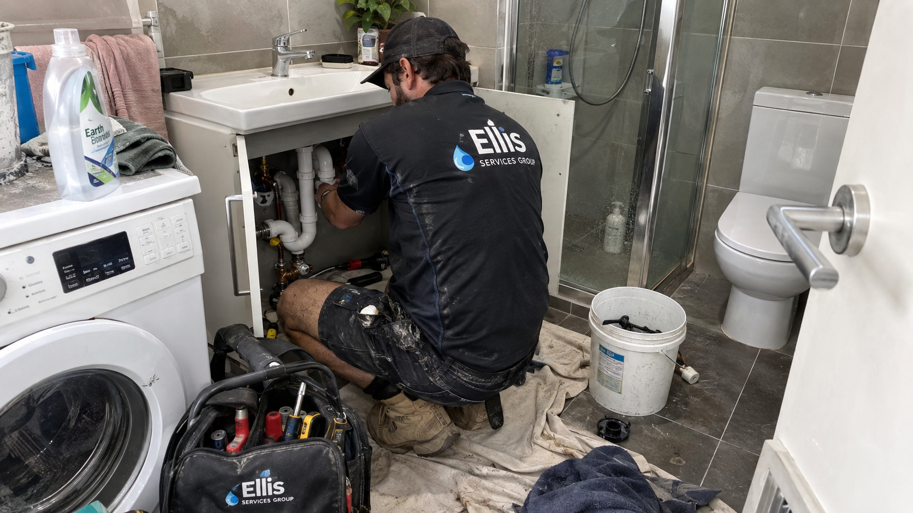

Kitchen & laundry
Taps, sinks, drainage and appliance connections where the issue or required work can be clearly described.
Practical plumbing and electrical support for fixture, tap and appliance connection concerns at Perth homes and managed properties.

Taps, sinks, drainage and appliance connections where the issue or required work can be clearly described.
Toilets, showers, basins and mixers with leaks, poor flow, drainage or fitting concerns.
Power outlets, isolation switches and visible electrical symptoms around household appliances. Do not dismantle equipment.
A drip, damp cabinet base, loose connection or visible water at a sink, tap, mixer or appliance connection can be described as a fixture issue. The visible point is not always the confirmed cause, so we assess the accessible fitting, water supply and drainage context before deciding the appropriate repair scope. If the source is not visible or moisture is appearing away from a fixture, water leak detection may be the more suitable starting point.
Tell us the fixture or appliance model where it is safely readable, what has changed, and whether the issue is active, intermittent or getting worse. Photos can help when they can be taken without approaching water near electrical equipment, exposed wiring or another hazard.
For kitchens, laundries and bathrooms, access to the fixture, cabinet or service area can affect the most suitable work sequence. We use the information available to discuss the scope before any work is arranged.
Connection and repair work is quoted against the actual property, fixture condition and agreed scope. The quote process considers the work required, access, compatible materials or replacement parts, and whether plumbing and electrical tasks need to be coordinated.
Where an issue cannot be confirmed from the initial information, the first step may be an assessment to identify the appropriate repair or installation path. Any variation to the agreed scope is discussed before additional work proceeds.
Request a fixture or appliance enquiryInclude the fixture or appliance, the room, what you have noticed and whether water or electricity is involved. If there is an immediate electrical or water hazard, keep clear of it and call 000 where appropriate.
Include the fixture or appliance, the room, the issue you have noticed, the property address and whether water, drainage or electrical supply is involved.
Yes. Explain the complete requirement so the relevant plumbing and electrical work can be considered as part of the scope.
Pricing is based on the agreed scope, property access, materials or parts required and the condition confirmed through the enquiry or assessment process.
For drips, poor flow, temperature-control changes and visible fitting concerns.
Explore taps & mixers →For flushing, cistern, leakage and wastewater-related observations.
Explore toilet repairs →For hot-water availability, pressure and fixture supply concerns.
Explore hot-water systems →For visible outlet, switch or supply symptoms around an appliance.
Explore electrical support →View all plumbing services → · Find your Perth area → · Send an enquiry →